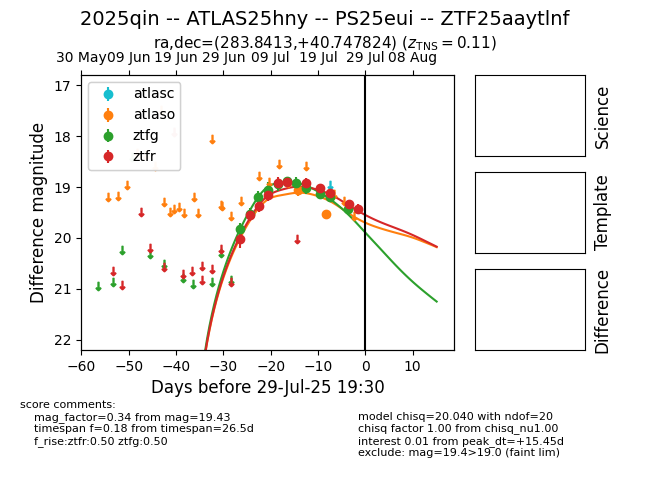

Target 2025qin at 2025-07-29 19:30, see:
FINK: fink-portal.org/2025qin
Lasair: lasair-ztf.lsst.ac.uk/objects/2025qin
ALeRCE: alerce.online/object/2025qin
TNS: wis-tns.org/object/2025qin
YSE: ziggy.ucolick.org/yse/transient_detail/2025qin
alt names
ZTF25aaytlnf (ztf,fink)
2025qin (tns,yse)
PS25eui (panstarrs)
ATLAS25hny (atlas)
coordinates:
equatorial (ra, dec) = (283.8413,+40.74782)
galactic (l, b) = (70.6980,+16.62350)
photometry
last atlaso=19.53, ztfg=19.43, ztfr=19.43
2 atlaso, 11 ztfg, 11 ztfr detections
